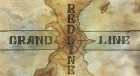

Even miracles take a little time
Life is an unexpected trip, similar to traveling the Grand Line in the universe of One Piece. Just as the Straw Hat Pirates overcome hardships, make new friends, and discover hidden treasures during their adventurous trip, we also travel through ups and downs, create connections, and seek our own treasures in the great ocean of existence.
The Grand Line is well-known in the One Piece universe for its mysteries, dangers, and miracles. Similarly, life provides us with a diverse range of events that define who we are and where we are going. Just as Luffy and his crew face formidable opponents and unexpected difficulties, we, too, endure challenges that test our fortitude and resolve. In these times of difficulty, we uncover our inner strength and fortitude to beat the odds.
Friendship and camaraderie are important in both the world of One Piece and our daily life. The ties developed by the Straw Hat Pirates demonstrate the value of camaraderie, trust, and devotion. Similarly, the ties we form with others improve our lives and bring comfort during difficult times. Just as Luffy relies on his crewmates to navigate perilous waters, we rely on our friends and loved ones for support and encouragement in life's tempestuous seas.
Furthermore, the idea of "finding One Piece" in life extends beyond the actual search for a fabled treasure. It represents the pursuit of our aspirations, passions, and ultimate purpose. Just as each member of the Straw Hat Pirates has unique goals and motives, we endeavor to discover our own "treasure" - whether it is success, pleasure, fulfillment, or personal development. The path to uncover our own "One Piece" is an ongoing search that necessitates tenacity, self-discovery, and unflinching faith in ourselves.
As we traverse the unexpected waters of life, we are reminded of the lessons learned from the world of One Piece. The necessity of fortitude in the face of adversity, the value of friendship and camaraderie, and pursuing our aspirations are all deeply rooted in our own experiences and tribulations. Just like Luffy and his crew set sail for the unknown, we begin on our own adventures, accepting the obstacles and victories that come our way.
Finally, life parallels the Straw Hat Pirates' epic trip in One Piece. By embracing the spirit of adventure, making important connections, and pursuing our dreams with steadfast commitment, we can navigate life's Grand Line and find our own "One Piece" - the treasure that gives our lives purpose and fulfillment.
YATTA!!